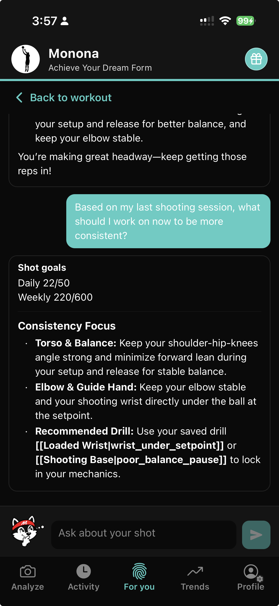
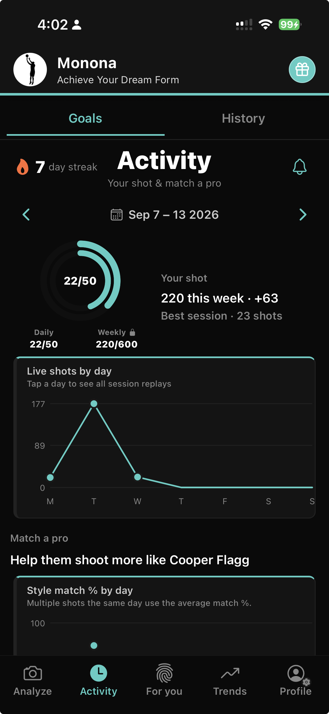

出手即時回饋
球離手的那一刻就收到教練提示。
在球場上即時提示，訓練結束後完整回顧每一次出手。
球離手的那一刻就收到教練提示。
說出「Hey Mo」或「Hey Monona」，提問即可即時獲得回答。
把每一投拆成階段，回看每次重複的細節。
立刻放大那次影響進球的姿勢偏差。
看見力量與能量如何在你的動作中流動。
結束練習時，清楚總結進步之處與下一步要修正的項目。
Mo 掌握你每一投、每一次進步，始終陪伴你的籃球旅程。

你的訓練夥伴，追蹤每一投與數據，從第一次出手到下一次突破都與你同在。
連續天數、每日與每週投籃目標、每日 Live Shoot 次數與訓練歷史，讓進步不會在場與場之間流失。

使用 Live Shoot 與 Mo 的球員與教練。
慢動作分解讓我能清楚向球員展示姿勢哪裡走樣。NBA 比對讓 12、13 歲的孩子特別有動力，也是訓練時我真正想用的工具。
我測了一陣子，確實好用。它把我配到 Curry 的型態，成效也看得出來。偶有小問題，但不影響我持續使用。
完全免費，還能用職業比對、百分比與角度分析你的投籃。可自己選模型球員或自動配對，都能清楚看到哪些做得好、哪些要改。
拿上次 pickup 的片段試了幾次，肘部路徑回饋真的點出我自己都沒發現的卡點。職業比對疊加對抓小幅度時序差距很有幫助。
Live Shoot、Mo 與入門方式。
Hoop Mo 是 AI 籃球投籃教練，提供 Live Shoot 即時回饋、記得住每一投的 Mo 對話，以及進度追蹤。iOS 免費下載。
Live Shoot 是 Hoop Mo 的即時訓練模式。投籃時每一球出手都有回饋，可與 Mo 對話，並包含階段重播、不足處放大、能量分解與訓練回顧。
說出「Hey Mo」或「Hey Monona」，再提出你的問題。Mo 會根據你每一投與每次進步的脈絡，即時回答。
會。Mo 掌握你每一投與每次進步，建議與計畫都會對應你的真實訓練紀錄。
是。Hoop Mo 在 iOS 上免費提供 AI 籃球投籃教練功能，包含 Live Shoot、Mo 對話與進度追蹤。
使用 iPhone 從側面拍攝，畫面中有一位投手與一顆籃球。能清楚看到從準備到 follow-through 的完整動作，效果最佳。
職業姿勢配對與 NBA 模型比對請見我們的職業球員比對頁面。
下載 Hoop Mo，今天就開始 Live Shoot 訓練。